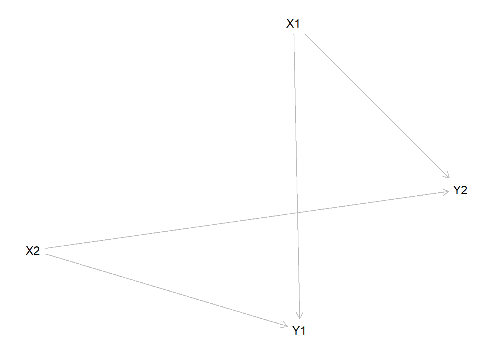
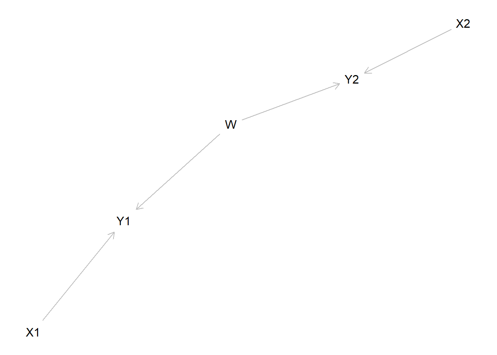

Chapter 9 Integrated inferences
We extend the analysis of Chapter 7 to settings in which we can simultaneously learn from cross case data on treatment and outcomes and causal process data for a subset of cases. In doing so we update our theory from cases and use our updated theory to draw case-level inferences. While our process tracing was entirely theory-informed, mixed-data inference is also data-informed.
In this chapter we generalize the model developed in Chapter 7 to research situations in which we have data on multiple cases.
We start with a conceptual point: the structure introduced in Chapter 6 for single-case analysis can be used as is for multi-case analysis. Thus, the conceptual work for mixed methods inference from models has been done already. Our goal for the rest of the chapter is thus more technical than conceptual—to show how to shift focus beyond sample level queries and to exploit assumptions regarding independence across cases to generate simpler models of causal processes that affect many units. As we do so, we provide microfoundations for the models in Chapter 8 (as with those in Humphreys and Jacobs (2015)) with the probative value of clues derivable from a causal structure and data rather than provided directly by researchers.
9.1 Sample inference
Conceptualized correctly, there is no deep difference between the logic of inference used in single-case and in multi-case studies. This is not because any single “case” can be disaggregated into many “cases,” thereby allowing for large \(n\) analysis on small problems (King, Keohane, and Verba 1994). Rather, the opposite: fundamentally, model-based inference always involves comparing a pattern of data with the logic of the model. Studies with multiple cases can, in fact, be conceptualized as single-case studies: we always draw our inferences from a single collection of clues, whether those clues have come from one or from many units.
In practice, when we move from a causal model with one observation to a causal model with multiple observations, we can use the structure we introduced in Chapter 7 but simply replace nodes that have a single value (i.e., scalars) with nodes containing multiple values (i.e., vectors) drawn from multiple cases. We then make inferences about causal relations between nodes from seeing the values of those nodes’ (or other nodes’) vectors.
To illustrate, consider the following situation. Suppose that our model includes a binary treatment \(X\) that is assigned to 1 with probability 0.5; an outcome, \(Y\); and a third “clue” variable, \(K\), all observable. We posit an unobserved variable \(\theta^Y\), representing \(Y\)’s nodal type, with \(\theta^Y\) taking on values in \(\{a,b,c,d\}\) with equal probability. (We interpret the types in \(\{a,b,c,d\}\) as defined in Section 2.1.) In addition to pointing into \(Y\), moreover, \(\theta^Y\) affects \(K\). In particular, \(K=1\) whenever \(X\) has an effect on \(Y\), while \(K=1\) with a 50% probability otherwise. In other words, our clue \(K\) is informative about \(\theta^Y\), a unit’s nodal type for \(Y\). As familiar from Chapters 7 and 8, when we observe \(K\) in a case we can update on causal effects within the case since that \(K\) value will have different likelihoods under different values of \(\theta^Y\).
So far, we have described the problem at the unit level. Let’s now consider a two-case setup. We do this by exchanging scalar nodes for vectors:
- We have a treatment node, \(X\), that can take on one of four values, \((0,0), (0,1), (1,0), (1,1)\) with equal probability.
- \(\theta^Y\) is now a vector with two elements that can take on one of 16 values \((a,a), (a,b),\dots (d,d)\) as determined by \(\lambda_\theta\). We might imagine a uniform distribution over these 16 elements.
- \(Y\) is a vector that is generated by \(\theta^Y\) and \(\X\) in the obvious way (e.g., \(X=(0,0), \theta^Y=(a,b)\) generates outcomes \(Y=(1,0)\))
- The vector \(K\) has the same domain as \(X\) and \(Y\), and element \(K[j]=1\) if \(\theta^Y[j]=b\).
Now, consider a causal estimand. In a single-case setup, we might ask whether \(X\) has an effect on \(Y\) in the case. For a multi-case setup, we might ask what the Sample Average Treatment Effect, \(\tau\), is. Note a subtle difference in the nature of the answers we seek in these two situations. In the first (single-case) instance, our estimand is binary—of the form: “is the case a \(b\) type?”—and our answer is a probability. In the multi-case estimation of the sample average treatment effect (“SATE”), our estimand is categorical and our answer is a probability distribution: we are asking “what is the probability that \(\tau\) is 0?,” “what is the probability that \(\tau\) is .5?” and so on.
While the estimand shifts, we can use the tools introduced for single-case process tracing in Chapters 7 and 8 to analyze this (superficially) multi-case study. To begin, our prior on the probability that \(\tau=1\) is the prior that \(X\) has a positive effect on \(Y\) in both cases, that is, that \(\theta^Y = (b,b)\): just 1 in 16.
Now, suppose that we observe that, for both units, \(X=1\) and \(Y=1\). This data pattern is consistent only with four possible \(\theta\) vectors: \((b,b), (d,d), (b, d), (d,b)\). Moreoever each of these four is equally likely to produce the data patter we see). So our belief that \(\tau=1\) now shifts from 1 in 16 to to 1 in 4. Next, suppose that we further observe the data pattern \(\mathbf K = (1,1)\). The probability of this pattern for \(\Theta\) vector \((b,b)\) (\(\tau = 1\)) is 1. And for the type vectors \((d,d), (b, d), (d,b)\), the probability of this \(\mathbf K\) pattern is \(.25, .5,\) and \(.5\), respectively. Applying Bayes’ rule, our updated belief that \(\tau = 1\) is then \(1/(1 + .25 + .5 + .5) = 4/9\).
We can similarly figure out the posterior probability on any possible value of \(\tau\) and so build up a full posterior distribution. And we can do so given any \(\mathbf K\) pattern (i.e., \(\mathbf K\) realization) across the cases. Thus, if we observe the data pattern \(\mathbf K = (0,1)\), the probability of this pattern for type vector \((b,b)\) (\(\tau = 1\)) is 0. For the type vectors \((d,d), (b, d), (d,b)\) it is \(.25, 0, .5\), respectively. The table below represents the posterior distribution over a set of discrete treatment effect values given different \(K\) patterns observed.
| \(X\) pattern | \(Y\) pattern | \(K\) pattern | \(\tau = -1\) | \(\tau = -.5\) | \(\tau = 0\) | \(\tau = .5\) | \(\tau = 1\) |
|---|---|---|---|---|---|---|---|
| (1,1) | (1,1) | (1,1) | 0 | 0 | 1/9 | 4/9 | 4/9 |
| (1,1) | (1,1) | (1,0) | 0 | 0 | 1/3 | 2/3 | 0 |
| (1,1) | (1,1) | (0,0) | 0 | 0 | 1 | 0 | 0 |
The conceptual point is that the general logic of inference with multiple units is the same as that with one unit. In both situations, we work out the likelihood of any given data pattern for each possible set of values of model parameters and update our beliefs about those parameters. And, from our posterior distribution over model parameters (e.g., \(\Theta^Y\)), we then derive a posterior distribution over the possible answers to our query (e.g., values of \(\tau\)).62
9.2 From sample queries to general processes
Although the core conceptual logic is the same for multi-case and single-case inference, going forward, we operationalize these problems somewhat differently.
For the remainder of this chapter, and for the rest of the book, when we focus on muti-case studies, we will set our sights primarily on models that describe general processes. Rather than seeking to understand the average effect in a set of cases, we seek to understand the causal relations that gave rise to the set of cases. From these we sometimes draw inferences to cases but in general our models will involve queries pitched in general terms.
There are two reasons for this. The first is that we are interestied in learning across cases: To figure out how what we see in one case provides insight for what is happening in another. We do this by using data on some cases to update our beliefs about a general model that we think is of relevance for other cases. Thus we seek to learn about a general model. The second reason is more practical. The first is that if we can think of units as draws from a large population, and then invoke independence assumptions across types, then we can greatly reduce complexity by analyzing problems at the unit level rather than at the population level. In the 2-case example above, the vector \(\theta^Y\) could take on any of 16 values (\((a,a), (a,b),\dots (d,d)\)). At the case level, however, the node \(\theta^Y\) can take on only 4 values (\(\{a,b,c,d\}\)), yet we can learn about each case’s \(\theta^Y\) value from data drawn from all the cases. Thinking about it this way simplifies the problem by greatly reducing the parameter space, but it is not free. It requires invoking the assumption that (potential) outcomes across units do not depend on each other. If we cannot stand by that assumption, then we will need to build independence failures into our models.
Taking this step, the procedure we now use in the mixed methods works as follows.
9.2.1 Set up
A DAG. As for process tracing, we begin with a graphical causal model specifying possible causal linkages between nodes. Our “chain” model for instance has DAG: \(X \rightarrow M \rightarrow Y\).
Nodal types. Just as in process tracing, the DAG and variable ranges define the set of possible nodal types in the model—the possible ways in which each variable is assigned (if exogenous) or determined by its parents (if endogenous). For the \(X \rightarrow M \rightarrow Y\) model there are 2 types for \(\theta^X\), 4 for \(\theta^M\), and 4 for \(\theta^Y\).
Causal types. A full set of nodal types gives rise to a full set of causal types, encompassing all possible combinations of nodal types across all nodes in the model. We let \(\theta\) denote an arbitrary causal type. For a \(X \rightarrow M \rightarrow Y\) model, one possible causal type would be \(\theta = (\theta^X_1, \theta^M_{01}, \theta^M_{01})\).
Parameters. As before, we use \(\lambda^V\) to denote the probabilities of \(\theta^V\) for a given node, \(V\). Recall that in process tracing, we sought to learn about \(\theta\) and our priors were given by \(\lambda\). When we shift to multi-case inference, \(\lambda\) becomes the parameter that we want to learn about: we seek to learn about the probability of different types arising in a population (or the shares of types in a large population).
Priors. In the process tracing setup, we treat \(\lambda\) as given: we do not seek to learn about \(\lambda\), and uncertainty over \(\lambda\) plays no role. When we get to observe data on multiple cases, however, we have the opportunity to learn both about the cases at hand and about the population. Moreover, our level of uncertainty about population-level parameters will shape our inferences. We thus want our parameters (the \(\lambda\)’s) to be drawn from a prior distribution — a distribution that expresses our uncertainty and over which we can update once we see the data. While different distributions may be appropriate to the task in general, uncertainty over proportions (of cases, events, etc.) falling into a set of discrete categories is usefully described by a Dirichlet distribution, as discussed in Chapter 5. Recall that the parameters of a Dirichlet distribution (the \(\alpha\)’s) can be thought of as conveying both the relative expected proportions in each category and our degree of uncertainty.

Figure 9.1: Types, parameters, and priors
Box: Setting priors
For a model with no unobserved confounding, setting priors requires specifying a prior distribution for each node. Specifically, we are expressing, for each node, a prior belief about the share of the population that is of each nodal type. We use a Dirichlet distribution, which allows us to indicate both our “best guess” about nodal type shares and our degree of uncertainty about those shares. The parameters of a Dirichlet distribution (the \(\alpha\)’s) are provided as vectors of positive numbers with one number for each nodal type. The relative size of each number indicates our prior belief about the relative share of each nodal type. The absolute sizes indiciates our degree of prior certainty in those beliefs. For a simple \(X \rightarrow Y\) model, we have two \(\alpha\) parameter sets: one for \(X\)’s types and one for \(Y\)’s types.
For \(X\)’s types, we specify \(\alpha^X_0\) and \(\alpha^X_1\), corresponding to the nodal types \(\theta^X_0\) and \(\theta^X_1\), respectively. A distribution of the form (\(\alpha^X_0=100, \alpha^X_1=100)\), for instance, implies a great deal of confidence that the population is composed about equally of \(\theta^X_0\) and \(\theta^X_1\) cases (or, equivalently, that \(\lambda^X_1\) is around 0.5). In contrast, a distribution of the form (\(\alpha^X_0=.1, \alpha^X_1=.1)\) implies a very high level of uncertainty: we believe that either most cases are \(\theta^X_0\)’s or that most cases are \(\theta^X_1\)’s, but we are not sure which.
For \(Y\)’s types, we specify \(\alpha^Y_{00}\), \(\alpha^Y_{10}\), \(\alpha^Y_{01}\), and \(\alpha^Y_{11}\), corresponding to the nodal types \(\theta^Y_{00}\), \(\theta^Y_{01}\), and so on. So, for instance:
- \(\alpha^Y_{00}=1\), \(\alpha^Y_{10}=1\), \(\alpha^Y_{01}=1\), and \(\alpha^Y_{11}=1\) yields a uniform prior distribution in which all share allocations of types in the population are equally likely.
- \(\alpha^Y_{00}=3\), \(\alpha^Y_{10}=3\), \(\alpha^Y_{01}=3\), and \(\alpha^Y_{11}=3\) puts somewhat more weight on share allocations in which the shares are relatively equal.
- \(\alpha^Y_{00}=5\), \(\alpha^Y_{10}=5\), \(\alpha^Y_{01}=10\), and \(\alpha^Y_{11}=5\) puts greater weight positive causal effects (\(\theta^Y_{01}\)) than on the other three types.
In a model without unobserved confounding, we set our beliefs about nodal type shares for each node independently. Thus, we can express more confidence in our beliefs about one node than about another by setting their \(\alpha\) values at different absolute levels. However, we would need to introduce unobserved confounding into a model in order to express beliefs about pairings of nodal types across nodes — for instance, the belief that \(\theta^Y_{01}\) is more likely when \(\theta^X_1 = 1\).
9.2.2 Inference
Inference then works by figuring out the probability of the data given different possible parameter vectors, \(\lambdas\), and then applying Bayes’ rule. In practice we proceed as follows.
Distributions over causal types. We first need characterize our beliefs about causal types given any possible parameter vector \(\lambda\). Imagine a draw of one possible value of \(\lambda\) from the prior. This \(\lambda\) vector implies a set of nodal type shares for all nodes. That set of nodal type shares implies, in turn, a distribution over causal types (\(\theta\)). For instance, the probability of causal type \(\theta = (\theta^X_1, \theta^Y_{01}, \theta^M_{01})\) is simply \(p(\theta|\lambda)=\lambda^X_1\lambda^M_{01}\lambda^Y_{01}\). More generally:
\[p(\theta|\lambda) = \prod_{k,v:\theta^v_k\in\theta}\lambda^v_k\]
Event probabilities. Each causal type in turn implies a single data realization, or data type. For instance \(\theta = (\theta^X_1, \theta^M_{01}, \theta^Y_{01})\) implies data \(X=1, M=1, Y=1\). Let \(D(\theta)\) denote the data type implied by causal type \(\theta\). A single data type, however, may be implied by multiple causal types. We use \(\Theta(d)\) to denote the set of causal types that imply a given data type:
\[\Theta(d) : \{\theta| D(\theta) = d \}\]
The probability of a given data type \(d\), is then:
\[w_d = \sum_{\theta \in \Theta(d)}p(\theta|\lambda)\]
And we use \(\mathbf w\) to denote the vector of event probabilities over all data types.
To illustrate, a data type \(d = (X=1, M =1, Y=1)\) is consistent with four different causal types in the \(X\rightarrow M\rightarrow Y\) model: \(\Theta(d) = \{(\theta^X_0, \theta^M_{01}, \theta^Y_{01}), (\theta^X_0, \theta^M_{11}, \theta^Y_{01}), (\theta^X_0, \theta^M_{01}, \theta^Y_{11}), (\theta^X_0, \theta^M_{11}, \theta^Y_{11})\}\). The probability of the data type is then calculated by summing up the probabilities of each causal type that implies the event: \(w_{111}:=\lambda^X_1(\lambda^M_{01} + \lambda^M_{11}))(\lambda^Y_{01} + \lambda^Y_{11})\).
In practice, calculating the full \(\mathbf w\) vector is made easier by the construction of a “parameter matrix” and an “ambiguity matrix,” just as for process tracing, that tells us which causal types are consistent with a particular data type.
We use Tables 9.1 and 9.2 to illustrate how to calculate the event probability for each data type for a given parameter vector \(\lambda\). Starting with data type \(X=0, Y=0\) (first column of the ambiguity matrix), we see that the consistent causal types are (\(\theta^X_0, \theta^Y_{00}\)) and (\(\theta^X_0, \theta^Y_{01}\)), in rows 1 and 4. We then turn to columns 1 and 4 of the parameter matrix to read off the probability of each of these causal types—in each case given by the probability of the nodal types that it is formed out of. This gives \(.4 \times .3\) and \(.4\times .2\) giving a total probability of \(0.2\) for the \(X=0, Y=0\) event. All four event probabilities, for the four data types, are then calculated in the same way.
In practice we do this all using matrx operations.
| X0Y0 | X1Y0 | X0Y1 | X1Y1 | |
|---|---|---|---|---|
| X0Y00 | 1 | 0 | 0 | 0 |
| X1Y00 | 0 | 1 | 0 | 0 |
| X0Y10 | 0 | 0 | 1 | 0 |
| X1Y10 | 0 | 1 | 0 | 0 |
| X0Y01 | 1 | 0 | 0 | 0 |
| X1Y01 | 0 | 0 | 0 | 1 |
| X0Y11 | 0 | 0 | 1 | 0 |
| X1Y11 | 0 | 0 | 0 | 1 |
| X0.Y00 | X1.Y00 | X0.Y10 | X1.Y10 | X0.Y01 | X1.Y01 | X0.Y11 | X1.Y11 | \(\lambda\) | |
|---|---|---|---|---|---|---|---|---|---|
| X.0 | 1 | 0 | 1 | 0 | 1 | 0 | 1 | 0 | 0.4 |
| X.1 | 0 | 1 | 0 | 1 | 0 | 1 | 0 | 1 | 0.6 |
| Y.00 | 1 | 1 | 0 | 0 | 0 | 0 | 0 | 0 | 0.3 |
| Y.10 | 0 | 0 | 1 | 1 | 0 | 0 | 0 | 0 | 0.2 |
| Y.01 | 0 | 0 | 0 | 0 | 1 | 1 | 0 | 0 | 0.2 |
| Y.11 | 0 | 0 | 0 | 0 | 0 | 0 | 1 | 1 | 0.3 |
Likelihood. Now that we know the probability of observing each data pattern in a single case given \(\lambda\), we can use these event probabilities to aggregate up to the likelihood of observing a data pattern across multiple cases (given \(\lambda\)). For this aggregation, we make use of an independence assumption: that each unit is independently drawn from a common distribution. Doing so lets us move from a categorical distribution that gives the probability that a single case has a particular data type to a multinomial distribution that gives the probability of seeing an arbitrary data pattern across any number of cases.
Specifically, with discrete variables, we can think of a given multiple-case data pattern simply as a set of counts across categories. For, say, \(X, Y\) data, we will observe a certain number of \(X=0, Y=0\) cases (which we notate as \(n_{00}\)), a certain number of \(X=1, Y=0\) cases (\(n_{10}\)), a certain number of \(X=0, Y=1\) cases (\(n_{01}\)), and a certain number of \(X=1, Y=1\) cases (\(n_{11}\)). A data pattern, given a particular set of variables observed (a search strategy), thus has a multinomial distribution. The likelihood of a data pattern under a given search strategy, in turn, takes the form of a multinomial distribution conditional on the number of cases observed, \(n\), and the probability of each data type, given a \(\lambda\) draw. More formally, we write:
\[d \sim \text{Multinomial}(n, w(\lambda))\]
Let us assume now that we have a 3-node model, with \(X, Y\), and \(M\) all binary. Let \(\mathbf n_{XYM}\) denote an 8-element vector recording the number of cases in a sample displaying each possible combination of \(X,Y,M\) data, thus: \(\mathbf D= \mathbf n_{XYM}:=(n_{000},n_{001},n_{100},\dots ,n_{111})\). The elements of \(\mathbf n_{XYM}\) sum to \(n\), the total number of cases studied. Likewise, let the event probabilities for data types given \(\lambda\) be registered in a vector, \(\mathbf w_{XYM}=(w_{000},w_{001},w_{100},\dots ,w_{111})\). The likelihood of a data pattern, \(\mathbf D\) is then:
\[ p(d|\lambda) = \text{Multinom}\left(n_{XYM}|\sum n_{XYM}, w_{XYM}(\lambda)\right) \\ \] In other words, the likelihood of observing a particular data pattern given \(\lambda\) is given by the corresponding value of the multinomial distribution given the data probabilities.
- Estimation. We now have all the components for updating on \(\lambda\). Applying Bayes rule (see Chapter @(bayeschapter)), we have:
\[p(\lambda | d) = \frac{p(d | \lambda)p(\lambda)}{\int_{\lambda'}{p(d | \lambda')p(\lambda')}}\]
In the CausalQueries package this updating is implemented in stan, and the result of the updating is a dataframe that contains a collection of draws from the posterior distribution for \(\lambda\). Table 9.3 illustrates what such a dataframe might look like for an \(X\rightarrow M \rightarrow Y\) model. Each row represents a single draw from \(p(\lambda|d)\). The 10 columns represent shares for each of the 10 nodal types in the model, under each \(lambda\) draw.
| X.0 | X.1 | M.00 | M.10 | M.01 | M.11 | Y.00 | Y.10 | Y.01 | Y.11 |
|---|---|---|---|---|---|---|---|---|---|
| 0.47 | 0.53 | 0.21 | 0.07 | 0.17 | 0.55 | 0.20 | 0.23 | 0.15 | 0.41 |
| 0.68 | 0.32 | 0.02 | 0.41 | 0.38 | 0.19 | 0.12 | 0.20 | 0.07 | 0.61 |
| 0.33 | 0.67 | 0.16 | 0.45 | 0.27 | 0.12 | 0.08 | 0.02 | 0.81 | 0.09 |
| 0.68 | 0.32 | 0.15 | 0.10 | 0.70 | 0.05 | 0.03 | 0.07 | 0.00 | 0.90 |
| 0.17 | 0.83 | 0.02 | 0.11 | 0.64 | 0.22 | 0.44 | 0.06 | 0.30 | 0.20 |
| 0.83 | 0.17 | 0.16 | 0.08 | 0.02 | 0.73 | 0.49 | 0.28 | 0.12 | 0.11 |
- Querying.
Once we have generated a posterior distribution for \(\lambda\), we can then query that distribution. The simplest queries relate to values of \(\lambda\). For instance, if we are interested in the probability that \(M\) has a positive effect on \(Y\), given an updated \(X \rightarrow M \rightarrow Y\) model, we want to know about the distribution of \(\lambda^M_{01}\). This distribution can be read directly from column 9 (\(Y01\)) of Table @(tab:posteriortable). More complex queries can all be described as summaries of combinations of these columns. For instance, the query, “What is the average effect of \(M\) on \(Y\)” is a question about the distribution of \(\lambda^M_{01} - \lambda^M_{10}\), which is given by the difference between columns 9 and 8 of the table. Still more complex queries may require keeping some nodes constant while varying others, yet all of these can be calculated as summaries of the combinations of columns of the posterior distribution, following the rules described in Chapter 4.
Table 9.4 shows examples of a full mapping from data to posteriors. We begin with a simple chain model of the form \(X\rightarrow M \rightarrow Y\) with flat priors over nodal types and report inferences on a set of queries (columns) for difference data types (rows).
| Data | a | b | c | d | \(\tau_{XM}\) | \(\tau_{MY}\) | \(\tau_{XY}\) | PC |
|---|---|---|---|---|---|---|---|---|
| No data | 0.13 | 0.13 | 0.37 | 0.38 | 0.00 | -0.01 | 0.00 | 0.27 |
| 2 cases X, Y data only | 0.12 | 0.14 | 0.37 | 0.37 | 0.00 | 0.00 | 0.02 | 0.29 |
| 2 cases, X, M, Y data | 0.12 | 0.16 | 0.36 | 0.36 | 0.20 | 0.20 | 0.04 | 0.32 |
| 10 cases: X, Y data only | 0.11 | 0.27 | 0.31 | 0.31 | 0.00 | 0.00 | 0.17 | 0.45 |
| 10 cases: X, M, Y data | 0.09 | 0.44 | 0.23 | 0.23 | 0.59 | 0.59 | 0.35 | 0.66 |
9.2.3 Wrinkles
9.2.3.1 Unobserved confounding.
When there is unobserved confounding, we need parameter sets that allow for a joint distribution over nodal types. Unobserved confounding, put simply, means that there is confounding across nodes that is not captured by nodes and edges represented on the DAG. More formally, in the absence of unobserved confounding, we can treat the distribution of nodal types for a given node as independent of the distribution of nodal types for every other node. Unobserved confounding means that we believe that nodal types may be correlated across nodes. Thus, for instance, we might believe that those units assigned to \(M=1\) have different potential outcomes for \(Y\) than those assigned to \(M=0\) – i.e., that the probability of \(M=1\) is correlated with whether or not \(M\) has an effect on \(Y\). To allow for such a correlation, we have to allow \(\theta^M\) and \(\theta^Y\) to have a joint distribution. There are different ways to do this in practice, but a simple approach is to split the parameter set corresponding to the \(Y\) node into two: we specify one distribution for \(\theta^Y\) when \(M=0\) and a separate distribution for \(\theta^Y\) when \(M=1\). For each of these parameter sets, we specify two \(\alpha\) parameters representing our priors. We can draw \(\lambda\) values for these conditional nodal types from the resulting Dirichlet distributions, as above, and can then calculate causal type probabilities in the usual way. Note that if we do this in an \(X \rightarrow M \rightarrow Y\) model, we have one 2-dimensional Dirichlet distribution corresponding to \(X\), one 4-dimensional Dirichlet distribution corresponding to \(M\), and two 4 dimensional distributions corresponding to \(Y\). In all, with 1+3+3+3 degrees of freedom: exactly the number needed to represent a joint distribution over all \(\theta^X, \theta^M, \theta^Y\) combinations.
In the figure below we represent this confounding by indicating parameters values \(\lambda_{MY}\) that determine the joint distribution over \(\theta_M\) and \(\theta_Y\).

Figure 9.2: Types, parameters, and priors, with confounding
9.2.3.2 Sampling and the likelihood principle
In constructing a likelihood function, we need to take the sampling strategy into account. Consider, for instance, the following conditional data strategy: we collect data on \(X\) and \(Y\) in 2 cases, and we then measure \(M\) in any case in which we observe \(X=1, Y=1\).
The probability of each data type is as given in table below:
| type: | prob: |
|---|---|
| \(X1M0Y1\) | \(\lambda^X_1(\lambda^M_{00}+\lambda^M_{10})(\lambda^Y_{11}+\lambda^Y_{10})\) |
| \(X1M1Y1\) | \(\lambda^X_1(\lambda^M_{11}+\lambda^M_{01})(\lambda^Y_{11}+\lambda^Y_{01})\) |
| \(X0Y0\) | \(\lambda^X_0(\lambda^M_{00}+\lambda^M_{01})(\lambda^Y_{00}+\lambda^Y_{01}) + \lambda^X_0(\lambda^M_{10}+\lambda^M_{11})(\lambda^Y_{00}+\lambda^Y_{10})\) |
| \(X0Y1\) | \(\lambda^X_0(\lambda^M_{00}+\lambda^M_{01})(\lambda^Y_{10}+\lambda^Y_{11}) + \lambda^X_0(\lambda^M_{10}+\lambda^M_{11})(\lambda^Y_{01}+\lambda^Y_{11})\) |
| \(X1Y0\) | \(\lambda^X_1(\lambda^M_{00}+\lambda^M_{10})(\lambda^Y_{00}+\lambda^Y_{01}) + \lambda^X_1(\lambda^M_{01}+\lambda^M_{11})(\lambda^Y_{00}+\lambda^Y_{10})\) |
The two observations can be thought of as a multinomial draw from these five event types.
Alternatively they can also be thought of as the product of a draw from a strategy in which a set of units is drawn with observations on \(X,Y\) only and another set is drawn with observations on \(X, M, Y\).
In the single multinomial view we have the probability of seeing data with \(X=Y=0\) in one case and \(X=1, M=0, Y=1\) in another is:
- \(2P(X=0, Y=0)P(X=1, M=0, Y=1)\)
In the conditional strategy view we have
- \(2P(X=0, Y=0)P(X=1, Y=1)P(M=0 | X=1, Y=1)\)
In the two strategy view we have
- \(P(X=0, Y=0)P(X=1, M=0, Y=1)\)
which is the same up to a constant.
Say rather than conditioning \(X=Y=1\) to examine \(M\) one of the two cases were chosen at random to observe \(M\) and it just so happened to be be a case with \(X=Y=1\):
| type: | prob: |
|---|---|
| \(X0Y0\) | \(0.5\lambda^X_0(\lambda^M_{00}+\lambda^M_{01})(\lambda^Y_{00}+\lambda^Y_{01}) + 0.5\lambda^X_0(\lambda^M_{10}+\lambda^M_{11})(\lambda^Y_{00}+\lambda^Y_{10})\) |
| \(X0Y1\) | \(0.5\lambda^X_0(\lambda^M_{00}+\lambda^M_{01})(\lambda^Y_{10}+\lambda^Y_{11}) + 0.5\lambda^X_0(\lambda^M_{10}+\lambda^M_{11})(\lambda^Y_{01}+\lambda^Y_{11})\) |
| \(X1Y0\) | \(0.5\lambda^X_1(\lambda^M_{00}+\lambda^M_{10})(\lambda^Y_{00}+\lambda^Y_{01}) + 0.5\lambda^X_1(\lambda^M_{01}+\lambda^M_{11})(\lambda^Y_{00}+\lambda^Y_{10})\) |
| \(X1Y1\) | \(0.5\lambda^X_1(\lambda^M_{00}+\lambda^M_{10})(\lambda^Y_{10}+\lambda^Y_{11}) + 0.5\lambda^X_1(\lambda^M_{11}+\lambda^M_{01})(\lambda^Y_{11}+\lambda^Y_{01})\) + |
| \(X0M0Y0\) | \(0.5\lambda^X_0(\lambda^M_{00}+\lambda^M_{01}))(\lambda^Y_{00}+\lambda^Y_{01})\) |
| \(X0M1Y0\) | \(0.5\lambda^X_0(\lambda^M_{11}+\lambda^M_{10}))(\lambda^Y_{00}+\lambda^Y_{10})\) |
| … | |
| \(X1M1Y1\) | \(0.5\lambda^X_1(\lambda^M_{11}+\lambda^M_{01})(\lambda^Y_{11}+\lambda^Y_{01})\) |
In the single multinomial view we have the probability of seeing data with \(X=Y=0\) in one case and \(X=1, M=0, Y=1\) in another is now:
- \(2P(X=0, Y=0)P(X=1, M=0, Y=1)\)
In the conditional strategy view we have
- \(2P(X=0, Y=0)P(X=1, Y=1)P(M=0 | X=1, Y=1)\)
In the two strategy view we have
- \(P(X=0, Y=0)P(X=1, M=0, Y=1)\)
which is the same up to a constant.
9.2.3.3 Case inference following population updating
We are often in situations in which we observe patterns in \(n\) units and then seek to make an inference about one or more of the \(n\) cases conditional on both the case level data and the broader patterns in the full data.
Divide cases into set \(S^0, S^1\) where \(S^0\) is the set for which we wish to make case level inferences and \(S^1\) is the collection of other cases for which we have data.
In such cases should one use the data from \(S^0\) when updating on population estimands or rather update using \(S^1\) only and use information on \(S^1\) for the case level inferences only?
The surprising answer is that it is possible to do both, though exactly how queries are calculated depends on the method used.
Let \(\Lambda\) denote a collection of possible population parameters with typical element \(\lambda^i\). Let \(p\) denote a distribution over \(\Lambda\) (after updating on data from set \(S^1\)), with typical element \(\lambda^i\). Let \(X\) denote possible data for cases in \(S^0\) with realization \(x\).
Let \(d^i\) denote the probability of observing data \(X = x\) for a case (or set of cases) given \(\lambda^i\).
Let \(\tau^{|x}\) denote a query of interest—where the query is conditional in the sense that it relates to cases with data \(x\). An example might be: what is the effect of \(X\) on \(Y\) in a case in which \(M=1\) and \(Y=1\). Let \(q^i_j\) denote the probability that \(\tau^{|x} = \tau_j^{|x}\) when \(\lambda = \lambda^i\) for a case with data \(X=x\). Note \(q^i_j\) can be written \(z^i/d^i\) where \(z^i_j = \Pr(\tau^{|x} = \tau^{|x}_j, X=x | \lambda^i)\).
To illustrate say in an \(X\rightarrow Y\) model we were interested the effect of \(X\) on \(Y\) in a case with \(X=1, Y=1\). Then \(d^i = (\lambda^i)^X_1((\lambda^i)^Y_{01} + (\lambda^i)^Y_{11})\) is the probability of observeing (\((X=1, Y=1)\). Then for query \(\tau^{|x}_j = 1\) (did \(X\) cause \(Y\)) we have \(z^i_j = (\lambda^i)^X_1((\lambda^i)^Y_{01})\), and so the probability of this query for this case given \(\lambda^i\) is: \(q^i_j = \frac{(\lambda^i)^Y_{01}}{(\lambda^i)^Y_{01} + (\lambda^i)^Y_{11}}\)
The posterior on \(\tau^{S^0}\) for the cases in \(S^0\) that provide data \(x\), is then:
\[\Pr(\tau^{|x} = \tau_j^{|x}) = \frac{p^iz^i_j}{\sum_k p^kd^k}\]
This can be calculated from the prior \(p\) (that is the distribution on \(\Theta\) after updating on cases in \(S^1\) only).
Notice however that (a) the posterior distribution on \(\lambda^i\) given observation of \(x\) in the \(S^0\) set is \(\frac{p^id^i}{\sum_k p^kd^k}\) and (b) \(p^iz^i_j = p^id^iq^i\). It follows that this quantity can also be interpreted as the posterior mean of \(q^i\), after observing both \(S^0\) and \(S^1\).
We therefore have two approaches to calculatin these sample quantities: either take the posterior mean (posterior to \(S^0\) and \(S^1\)), over the distrubution of \(\lambda\) of the conditional probability of the estimand given the case data in \(S^0\), or take the expected probability of \(\tau\) given the prior (after observing \(S^1\) only) and condition on the probability of the case level data in \(S^0\)).
Box: Case inference and population data
When calculating queries in CausalQueries you can specify whether you are interested in “case level” inquiries or population inquiries. A case level inquiry of the form \(\tau^{|X}\) is calculated (case_level = TRUE) via \(\frac{\int_{\lambda}p(\tau, x|\lambda)p(\lambda)d\lambda}{\int_{\lambda}p(x|\lambda)p(\lambda)d\lambda}\). In contrast, the mean of population query (case_level = FALSE) is \(\int_{\lambda} \frac{p(\tau, x|\lambda)}{p(x|\lambda)}p(\lambda)d\lambda\).
The example below shows a case where these differ and illustrates two ways in which inferences on sample queries can be made.
make_model("X -> Y <- W") %>%
set_restrictions(labels = list(Y = c("0101", "0111")), keep = TRUE) %>%
set_priors(alpha = 100000) %>%
set_priors(node = "W", alpha = c(.5, .5)) %>%
update_model(data.frame(X=1,Y=1)) %>%
query_model("Y[X=1] > Y[X=0]",
given = "X==1 & Y==1",
case_level = c(FALSE, TRUE),
using = c("priors", "posteriors"),
expand_grid = TRUE)| Query | Given | Using | Case.estimand | mean | sd |
|---|---|---|---|---|---|
| Q 1 | X==1 & Y==1 | priors | FALSE | 0.412 | 0.347 |
| Q 1 | X==1 & Y==1 | posteriors | FALSE | 0.335 | 0.329 |
| Q 1 | X==1 & Y==1 | priors | TRUE | 0.332 | |
| Q 1 | X==1 & Y==1 | posteriors | TRUE | 0.264 |
`
9.3 Mixed methods
We do not need data on all nodes in order to implement the procedure. If we have data on only some of the nodes in a model, we follow the same basic logic as with partial process-tracing data. In calculating the probability of a pattern of partial data, we use all columns (data types) in the ambiguity matrix that are consistent with the partial data.
So, for instance, if we have an \(X \rightarrow Y\) model but observe only \(Y=1\), then we would retain both the \(X=0, Y=1\) column and the \(X=1, Y=1\) column. We then calculate the probability of this data type by summing causal-type probabilities for all causal types that can produce either \(X=0, Y=1\) or \(X=1, Y=1\).
What if our data have been collected via a mixture of search strategies? Suppose, for instance, that we have collected \(X,Y\) data for a set of cases, and have additionally collected data on \(M\) for a random subset of these. We can think of this mixed strategy as akin to conducting quantitative analysis on a large sample while conducting in-depth process tracing on part of the large-\(N\) sample. We can then summarize our data in two vectors, an 8-element \(n_{XYM}\) vector (\((n_{000},n_{001},\dots n_{111}\)) for the cases with process-tracing (\(M\)) observations, and a 4-element vector \(n_{XY*} = (n_{00*},n_{10*},n_{01*},n_{11*}\) for the partial data on those cases on which we did not conduct process tracing. Likewise, we now have two sets of data probabilities: an 8-element vector for the set of cases with complete data, \(w_{XYM}\), and a 4-element vector for those with partial data, \(w_{XY*}\).
Let \(n\) denote the total number of cases examined, and \(k\) the number for which we have data on \(M\). Assuming that each observed case represents an independent, random draw from the population, we can form the likelihood function as a product of multinomial distributions, one representing the complete-data (process-traced) cases and one representing those with only \(X,Y\) data:
\[\Pr(\mathcal{D}|\theta) = \text{Multinom}\left(n_{XY*}|n-k, w_{XY*}\right) \times \text{Multinom}\left(n_{XYM}|k, w_{XYM}\right)\]
We can construct likelihood functions in a similar fashion for any arbitrary mixture of search strategies.
9.4 Considerations
9.4.1 Probative value can be derived from a causal structure plus data
In Chapter 7, we discussed the fact that a DAG by itself is insufficient to generate learning about causal effects from data on a single case; we also need informative prior beliefs about population-level shares of nodal types.
When working with multiple cases, however, we can learn about causal relations when starting with nothing more than the DAG and data. In particular, we can simultaneously learn about case-level queries and justify our inferences from population-level data patterns.
For instance, in an \(X \rightarrow M \rightarrow Y\) model, even if we start with flat priors over \(M\)’s nodal types, observing a correlation (or no correlation) between \(X\) and \(M\) across multiple cases provides information about \(X\)’s effect on \(M\). Simply, a stronger, positive (negative) \(X, M\) correlation implies a stronger positive (negative) effect of \(X\) on \(M\). In turn, a stronger \(X,M\) correlation implies a stronger effect of \(X\) on \(Y\) since, under this model, that effect has to run through an effect of \(X\) on \(M\).
What’s more, data from multiple cases can provide probative value for within-case inference. Suppose, for the \(X \rightarrow M \rightarrow Y\) model, that we start with flat priors over all nodal types. As discussed in Chapter 7, observing \(M\) in a single case cannot be informative about \(X\)’s effect on \(Y\) in that case. If we have no idea of the direction of the intermediate causal effects, then we have no idea which value of \(M\) is more consistent with an \(X \rightarrow M\) effect or with an \(M \rightarrow Y\) effect. But suppose that we first observe data on \(X\) and \(M\) for a group of cases and find a strong positive correlation between the two variables. We now update to a belief that any effect of \(X\) on \(M\) is more likely to be positive than negative. Now, let’s say we look at one of our other cases in which \(X=1\) and \(Y=1\) and want to know if \(X=1\) caused \(Y=1\). Knowing now that any such effect would most likely have operated via a positive \(X \rightarrow M\) effect means that observing \(M\) will be informative: seeing \(M=1\) in this case will be more consistent with an \(X \rightarrow Y\) effect than will \(M=0\). The same logic, of course, also holds for observing cross-case correlations between \(M\) and \(Y\).
Our ability to draw probative value from cross-case data will depend on the causal model we start with. For instance, if our model allows \(X\) also to have a direct effect on \(Y\), our ability to learn from \(M\) will be more limited. We explore this issue in much greater detail in Chapter @ref(#caseselection).
9.4.2 Learning without identification
Some causal queries are identified while others are not. When a query is identified, each true value for the query is associated with a unique data distribution given infinite data. Thus, as we gather more and more data, our posterior on the query should converge on the true value. When a query is not identified, multiple true values of the query will be associated with the same data distribution given infinite data. With a non-identified query, our posterior will never converge on a unique value regardless of how much data we collect since multiple answers will be equally consistent with the data. A key advantage of causal model framework, however, is that we can learn about queries that are not identified.
We can illustrate the difference between identified and non-identified causal questions by comparing an \(ATE\) query to a probability of causation (\(PC\)) query for a simple \(X \rightarrow Y\) model. When asking about the \(ATE\), we are asking about the average effect of \(X\) on \(Y\), or the difference between \(\lambda^Y_{01}\) (the share of units with positive effects) and \(\lambda^Y_{10}\) (share with negative effects). When asking about the \(PC\), we are asking, for a case with given values of \(X\) and \(Y\), about the probability that \(X\) caused \(Y\) in that case. And a \(PC\) query is defined by a different set of parameters. For, say, an \(X=1, Y=1\) case and a \(X \rightarrow Y\) model, the probability of causation is given by just \(\lambda^Y_{01}\).
Let us assume a “true” set of parameters, unknown to the researcher, such that \(\lambda^Y_{01} = 0.6\), \(\lambda^Y_{10} = 0.1\) while we set \(\lambda^Y_{00} = 0.2\) and \(\lambda^Y_{11} = 0.1\). Thus, the true average causal effect is \(0.5\). We now use the parameters and the model to simulate a large amount of data (\(N=10,000\)). We then return to the model, set flat priors over nodal types, and update the model using the simulated data. We graph the posterior on our two queries, the \(ATE\) and the probability of positive causation in an \(X=1, Y=1\) case, in Figure 9.3.
Figure 9.3: ATE is identified, PC is not identified but has informative bounds
The figure illustrates nicely the difference between an identified and non-identified query. While the \(ATE\) converges on the right answer, the probability of causation fails to converge even with a massive amount of data. We see instead a range of values for this query on which our updated model places roughly equal posterior probability.
Importantly, however, we see that we do learn about the probability of causation. Despite the lack of convergence, our posterior rules out a wide range of values. While our prior on the query was 0.5, we have correctly updated toward a range of values that includes (and happens to be fairly well centered over) the true value (\(\approx 0.86\)).
A distinctive feature of updating a causal model is that it allows us to learn about non-identified quantities in this manner. We will end up with “ridges” in our posterior distributions: ranges or combinations of parameter values that are equally likely given the data. But our posterior weight can nonetheless shift toward the right answer.
At the same time, for non-identified queries, we have to be cautious about the impact of our priors. As \(N\) becomes large, the remaining curvature we see in our posteriors may simply be function of those priors. One way to inspect for this is to simulate a very large dataset and see whether the curvature remainsXXXXXXXXXX A second approach would be to do sensitivity analyses by updating the model on the same data with different sets of priors to see how this affects the shape of the posterior.
model <- make_model("X1 -> M1 -> Y <- M2 <- X2")
# restrict such that *only* M1 OR M2 could cause Y -- can we create a DD test? / achieve identification9.4.3 Beyond binary data
While the setup used in this book involves only binary nodes, the approach readily generalizes to non-binary data. Moving beyond binary nodes allows for considerably greater flexibility in response functions. For instance, moving from binary to merely 3-level ordinal \(X\) and \(Y\) variables allows us to represent non-linear and even non-monotonic relationships. It also allows us pose more complex queries, such as, “What is the probability that \(Y\) is linear in \(X\)?” “What is the probability that \(Y\) is concave in \(X\)?” or “What is the probability that \(Y\) is monotonic in \(X\)?”
To move to non-binary measurement, we need to be able to expand the nodal-type space to accommodate the richer range of possible relations between nodes that can take on more than two possible values. Suppose, for instance, that we want to operate with variables with 4 ordinal categories. In an \(X \rightarrow Y\) model, \(Y\)’s nodal types have to accommodate 4 possible values that \(X\) can take on, and 4 possible values that \(Y\) can take on for any value of \(X\). This yields \(4^4 = 256\) nodal types for \(Y\) and 1024 causal types (compared to just 8 in a binary setup).
The CausalQueries package, set up to work most naturally with binary nodes, can be used to represent non-binary data as well. The trick, as it were, is to express integers in base-2 and then represent the integer as a series of 0’s and 1’s on multiple nodes. In base-2 counting we would represent four integer values for \(X\) (say, 0, 1, 2,3) using \(00, 01, 10, 11\). If we use one binary node, \(X_1\) to represent the first digit, and a second node \(X_2\) to represent the second, we have enough information to capture the four values of \(X\). The mapping then is: \(X_1 = 0, X_2 = 0\) represents \(X=0\); \(X_1 = 0, X_2 = 1\) represents \(X=1\); \(X_1 = 1, X_2 = 0\) represents \(X=2\); and \(X_1 = 1, X_2 = 1\) represents \(X=3\). We construct \(Y\) in the same way. We can then represent a simple \(X \rightarrow Y\) relation as a model with two \(X\) nodes each pointing into two \(Y\) nodes: \(Y_1 \leftarrow X_1 \rightarrow Y_2, Y_1 \leftarrow X_2 \rightarrow Y_2\). To allow for the full range of nodal types we need to allow a joint distribution over \(\theta^{X_1}\) and \(\theta^{X_2}\) and over \(\theta^{Y_1}\) and \(\theta^{Y_2}\), which results in 3 degrees of freedom for \(X\) and 255 for \(Y\), as required.
In the illustration below with two 4-level variables, we generate data (\(N=100\)) from a non-monotonic process with the following potential outcomes: \(Y(0)=0, Y(1)=1, Y(2)=3, Y(3) = 2\). We then update and report on posteriors on potential outcomes.
We make use of a couple of helper functions to simplify working with conversions from statements on integers to statements on the binary representation of the integers.
# A function to generate an integer from values on 2 binary nodes
to_int <- function(X1, X2) strtoi(paste0(X1, X2), base = 2)
# A function to express a query on integer nodes into a query on
# binary nodes
Y_x <- function(x){
X <- R.utils::intToBin(x)
X <- case_when(X == "0" ~ c(0,0), X == "1" ~ c(0,1),
X == "10" ~ c(1,0), X == "11" ~ c(1,1))
paste0("to_int(Y1[X1=", X[1],
", X2=", X[2], "], Y2[X1=", X[1], ", X2=", X[2], "])")}Data from this model looks like this:
data <-
make_model("X1 -> Y1 <- X2; X1 -> Y2 <- X2") %>%
set_parameters(node = "Y1", label = "0101", parameters = 1) %>%
set_parameters(node = "Y2", label = "0110", parameters = 1) %>%
make_data(100, using = "parameters") %>%
mutate(X = to_int(X1, X2), Y = to_int(Y1, Y2))| X1 | X2 | Y1 | Y2 | X | Y |
|---|---|---|---|---|---|
| 0 | 0 | 0 | 0 | 0 | 0 |
| 0 | 1 | 0 | 1 | 1 | 1 |
| 1 | 0 | 1 | 1 | 2 | 3 |
| 1 | 1 | 1 | 0 | 3 | 2 |
Updating and querying is done in the usual way:
make_model("X1 -> Y1 <- X2; X1 -> Y2 <- X2; X1 <-> X2; Y1 <-> Y2") %>%
update_model(data) %>%
query_model(list(Y_x(0), Y_x(1), Y_x(2), Y_x(3)), using = "posteriors")| Q | Using | True value | mean | sd |
|---|---|---|---|---|
| Y(0) | posteriors | 0 | 0.37 | 0.08 |
| Y(1) | posteriors | 1 | 0.98 | 0.07 |
| Y(2) | posteriors | 3 | 2.60 | 0.09 |
| Y(3) | posteriors | 2 | 2.02 | 0.07 |
We see that the model performs well. As in the binary setup, the posterior reflects both the data and the priors. And, as usual, we have access to a full posterior distribution over all nodal types and can thus ask arbitrary queries of the updated model.
The greatest challenge posed by the move to non-binary data is computational. If \(Y\) takes on \(m\) possible values and has \(k\) parents, each taking on \(r\) possible values, we then have \(m^{r^k}\) nodal types for \(Y\). Thus, the cost of more granular measurement is complexity – an explosion of the parameter space – as the nodal type space expands rapidly with the granularity of measurement and the number of explanatory variables With three 3-level ordinal variables pointing into the same outcome, for instance, we have \(3^{27} = 7.6\) trillion nodal types!
We expect that, as measurement becomes more granular, researchers will want to manage the complexity by placing structure onto the possible patterns of causal effects. Structure, imposed through model restrictions, can quite rapidly tame the complexity. For some substantive problems, one form of structure we might be willing to impose is monotonicity. In a \(X \rightarrow Y\) model with 3-level variables, excluding non-monotonic effects brings down the number of nodal types from 27 to 17. Alternatively, we may have a strong reason to rule out effects in one direction: disallowing negative effects, for instance, brings us down to 10 nodal types. If we are willing to assume linearity, the number of nodal types falls further to 5.
9.4.4 Measurement error
One potential application of the approach we have described in this chapter to integrating differing forms of data is to addressing the problem of measurement error. The conceptual move to address measurement error in a causal model setup is quite simple: we incorporate the error-generating process into our model.
Consider, for instance, a model in which we build in a process generating measurement error on the dependent variable.
\[X \rightarrow Y \rightarrow Y_\text{measured} \leftarrow \text{source of measurement error}\]
Here \(X\) has an effect on the true value of our outcome of interest, \(Y\). The true value of \(Y\), in turn, has an effect on the value of \(Y\) that we measure, but so too does a potential problem with our coding process. Thus, the measured value of \(Y\) is a function of both the true value and error.
To motivate the setup, imagine that we are interested in the effect of a rule restricting long-term care staff to working at a single site (\(X\)) on outbreaks of the novel coronavirus in long-term care facilities (\(Y\)), defined as infections among two or more staff or residents. We do not directly observe infections, however; rather, we observe positive results of PCR tests. We also know that testing is neither comprehensive nor uniform. For some units, regular random testing is carried out on staff and residents while in others only symptomatic individuals are tested. It is the latter arrangement that potentially introduces measurement error.
If we approach the problem naively, ignoring measurement error and treating \(Y_\text{measured}\) as though it were identical to \(Y\), a differences in means approach might produce attenuation bias—insofar as we are averaging between the true relationship and 0.
We can do better with a causal model, however. Without any additional data, we can update on both \(\lambda_Y\) and \(\lambda^{Y_\text{measured}}\), and our posterior uncertainty would reflect uncertainty in measurement. We could go further if, for instance, we could reasonably exclude negative effects of \(Y\) on \(Y_\text{measured}\). Then, if we observe (say) a negative correlation between \(X\) and \(Y_\text{measured}\), we can update on the substantive effect of interest – \(\lambda^Y\) – in the direction of a larger share of negative effects: it is only via negative effects of \(X\) on \(Y\) that a negative correlation between \(X\) and \(Y_\text{measured}\) could emerge. At the same time, we learn about the measure itself as we update on \(\lambda^{Y_\text{measured}}\): the negative observed correlation \(X\) and \(Y_\text{measured}\) is an indicator of the degree to which \(Y_\text{measured}\) is picking up true \(Y\).
We can do better still if we can collect more detailed information on at least some units. One data strategy would be to invest in observing \(Y\), the true outbreak status of each unit, for a subset of units for which we already have data on \(X\) and \(Y_\text{measured}\) — perhaps by implementing a random-testing protocol at a subset of facilities. Getting better measures of \(Y\) for some cases will allow us to update more directly on \(\lambda^Y\), the true effect of \(X\) on \(Y\), for those cases. But just as importantly, observing true \(Y\) will allow us to update on measurement quality, \(\lambda^{Y_\text{measured}}\), and thus help us make better use of the data we have for those cases where we only observe \(Y_\text{measured}\). This strategy, of course, parallels a commonly prescribed use of mixed methods, in which qualitative research takes place in a small set of units to generate more credible measures for large-\(n\) analysis (see, e.g., Seawright (2016)).
In the illustration below, we posit a true average effect of \(X\) on \(Y\) of 0.6. We also posit an average “effect” of \(Y\) on measured \(Y\) of just 0.7, allowing for measurement error.
In this setup, with a large amount of data, we would arrive at a differences-in-means estimate of the effect of \(X\) on measured \(Y\) of about 0.42. Importantly, this would be the effect of \(X\) on \(Y_{\text{measured}}\) — not the effect of \(X\) on \(Y\) — but if we were not thinking about the possibility of measurement error, we would likely conflate the two, arriving at an estimate far from the true value.
We can improve on this “naive” estimate in a number of ways using a causal model, as shown in Table 9.8. First, we can do much better simply by undertaking the estimation within a causal model framework, even if we simply make use of the exact same data. We write down the following simple model \(X \rightarrow Y \rightarrow Y_\text{measured}\), and we build in a monotonicity restriction that disallows negative effects of \(Y\) on \(Y_{\text{measured}}\). As we can see from the first row in Table 9.8, our mean estimate of the \(ATE\) moves much closer to the true value of 0.6.
Second, we can add data by gathering measures of “true” \(Y\) for 20% of our sample. As we can see from the second row in the table, this investment in additional data does not change our posterior mean much but yields a dramatic increase in precision. In fact, as we can see by comparison to the third row, partial data on “true” \(Y\) yields an estimate that is almost the same and almost as precise as the one we would arrive it with data on “true” \(Y\) for all cases.
| Data | Using | mean | sd |
|---|---|---|---|
| Data on Y measured only | posteriors | 0.64 | 0.09 |
| Data on true Y for 20% of units | posteriors | 0.63 | 0.03 |
| Data on true Y | posteriors | 0.61 | 0.02 |
An alternative strategy might involve gathering multiple measures of \(Y\), each with their own independent source of error. Consider the model, \(X \rightarrow Y \rightarrow Y_\text{measured[1]}; Y \rightarrow Y_\text{measured[2]}\). Assume again a true \(ATE\) of \(X\) on \(Y\) of 0.6, that \(Y\) has an average effect of 0.7 on both \(Y_\text{measured[1]\) and \(Y_\text{measured[2]\), and no negative effects of true \(Y\) on the measures.63 In this setup, updating on the true \(Y\) can be thought of as a Bayesian version of “triangulation,” or factor analysis. The results in Table ?? are based the same data as in the previous example but now augmented with the second noisy measure for \(Y\).
| Data | Using | mean | sd |
|---|---|---|---|
| Two noisy measures | posteriors | 0.61 | 0.02 |
As we can see, two noisy measures perform about as well as access to full data on the true \(Y\) (as in Table 9.8).
The main point here is that measurement error matters for inference and can be taken directly into account within a causal model framework. Confusing measured variables for variables of interest will obviously lead to false conclusions. But if measurement concerns loom large, we can respond by making them part of our model and learning about them. We have illustrated this point for simple setups, but more complex structures could be just as well envisioned, such as those where error is related to \(X\) or, more perniciously, to the effects of \(X\) on \(Y\).
9.4.5 Spillovers
A common threat to causal inference is the possibility of spillovers: a given unit’s outcome being affected by the treatment status of another (e.g., possibly neighboring) unit. We can readily set up a causal model to allow for estimation of various quantities related to spillovers.
Consider, for instance, the causal model represented in Figure ??. We consider here a cluster of 3 units across which spillovers might occur. We might imagine, for instance, a cluster of geographically proximate villages separated from other clusters such that spillovers might occur between villages within a cluster, but can be ruled out across clusters. Here \(X_i\) and \(Y_i\) represent village \(i\)’s treatment status and outcome, respectively. The pattern of directed edges indicates that each village’s outcome might be affected both by its own and by its neighbors’ treatment status.
We now simulate data that allow for spillovers. Specifically, while independently assigning \(X_1\) and \(X_2\) to treatment \(50 \%\) of the time, we (a) set \(Y_1\) equal to \(X_1\), meaning that Unit 1 is affected only by its own treatment status and (b) set \(Y_2\) equal to \(X_1 \times X_2\), meaning that Unit 2 is equally affected by its own treatment status and that of its neighbor, such that \(Y_2 = 1\) only if both Unit 2 and its neighbor are assigned to treatment.
We simulate 100 observations from this data-generating process and then update a model (with flat priors over all nodal types).
Now we can extract a number of spillover-relevant causal quantities from the updated model. First we ask: what is the average effect of exposing a unit directly to treatment (“only_self_treated”) when the neighboring unit is untreated? Under the data-generating process that we have posited, we know that this effect will be \(1\) for Unit 1 (which always has a positive treatment effect) and \(0\) for Unit 2 (which sees a positive effect of \(X_2\) only when \(X_1 = 1\)), yielding an average across the two units of \(0.5\). We see from Table XXXX that we update, given our 100 observations, from a prior of 0 to a posterior mean of 0.371, approaching the right answer.
A second question we can ask is about the spillover by itself: what is the average treatment effect for a unit of its neighbor being assigned to treatment when the unit itself is not assigned to treatment (“only_other_treated”)? We know that the correct answer is \(0\) since Unit 1 responds only to its own treatment status, and Unit 2 requires that both units be assigned to treatment to see an effect. Our posterior estimate of this effect is right on target, at 0.
We can then ask about the average effect of any one unit being treated, as compared to no units being treated (“one_treated”). This is a more complex quantity. To estimate it, we have to consider what happens to the outcome in Unit 1 when only \(X_1\) shifts from control to treatment, with \(X_2\) at control (true effect is \(1\)); what happens to Unit 1 when only \(X_2\) shifts from control to treatment, with \(X_1\) at control (true effect is \(0\)); and the same two effects for Unit 2 (both true effects are \(0\)). We then average across both the treatment conditions and units. We arrive at a posterior mean of \(0.186\), not far from the true value of \(0.25\).
Finally, we can ask about the average effect of both treatments going from control to treatment (“both_treated”). The true value of this effect is \(1\) for both units, and the posterior has shifted quite far in the direction of this value.
Obviously, more complex setups are possible. We can also model the process in a way that allows for more learning (pooling) across units. In the present model, learning about effects for Unit 1 in a cluster tells us nothing about effects for Unit 2 in a cluster because they are set up to have completely independent nodal types. We could instead treat all units as drawn from the same population: we could represent this, for instance, in a graph with just one \(Y\) and two treatment nodes pointing into it, one for the unit’s own treatment status and one for its neighbor’s treatment status.

| Query | Using | mean | sd |
|---|---|---|---|
| only_self_treated | posteriors | 0.37 | 0.05 |
| only_other_treated | posteriors | 0.00 | 0.04 |
| one_treated | posteriors | 0.19 | 0.04 |
| both_treated | posteriors | 0.75 | 0.05 |
9.4.6 Clustering
We can also represent some forms of clustering, understood as the presence of an exogenous but unobserved factor that influences outcomes for some subgroup of units. For instance, we might be interested in the effects of training on individuals’ employment prospects, while recognizing that individuals living in the same neighborhood will be affected by common neighborhood-level features that we cannot directly observe.
We can capture some forms of clustering by placing the cluster-level factor on the graph.64 Let us imagine that we are studying the effect of providing public health insurance coverage on health outcomes for individuals in two-adult households that have a single earner. Our units of analysis are individuals, but these units are clustered into pairs within households.
We can represent this situation via the following structural model:

Let Unit 1 be the adult in paid employment and Unit 2 the adult not in paid employment, with \(X_i\) indicating the provision of public health insurance to Unit \(i\) and \(W\) representing an unobserved household-level factor that moderates causal effects for both units. We restrict the model such that, more specifically, \(W\) shuts off effects of health insurance for both individuals. By representing earners and non-earners separately on the graph, we allow for different effects of health insurance for these two different kinds of individuals. By representing the cluster-level factor, \(W\), on the graph, we also allow for learning across types of units: seeing effects (or non-effects) for one kind of unit allows us to update on \(W\)’s value, which in turn provides information about effects for the other type of unit.
One question we can ask with this setup is: would we learn more from concentrating our observations within a smaller number of clusters or spreading them out across clusters? In Table 9.11, we show results from two different data-collection strategies. In one instance, we observe both Unit 1 and Unit 2 in two clusters. In the other instance, we observe only Unit 1 in two clusters and only Unit 2 in two clusters. Both sets of data are drawn from a process in which the true treatment effect is XXXXXX. In both situations, we calculate the same estimand, the average treatment effect, defined as the effect of providing health insurance, averaged across the two unit types.
| Data | mean | sd |
|---|---|---|
| 2 obs from each of 2 clusters | 0.018 | 0.094 |
| 1 obs from each of 4 clusters | 0.020 | 0.095 |
9.4.7 Parameteric models
9.4.8 Prior data/beliefs “channel” the learning from new data
When we learn from new data, we always update conditional on any prior information. Consider the following example. Suppose that we are working with our familiar \(X \rightarrow M \rightarrow Y\) model. We first observe a large amount of \(X,Y\) data in which the two variables are strongly and positively correlated, thus indicative of a positive \(ATE\) of \(X\) on \(Y\). Next, we turn to process tracing a small number of cases: suppose we collect data on \(M\) in one \(X=1, Y=1\) case and one \(X=0, Y=0\) case, and we observe \(M=1\) in both cases. Well, \(M\) is uncorrelated with \(X\) across these two cases, constituting evidence against an effect of \(X\) on \(Y\). Since these are both cases in which a positive effect could have been operating, this finding will reduce our posterior on the share of positive effects in the population and, in turn, on the \(ATE\).
However, the strong prior information on the \(ATE\) that we began with still anchors our updating. Our downward updating on the \(ATE\) will be modest since our posterior is always a compromise between our (here, strong) priors and new information. More precisely, we will update less on the \(ATE\), about which we had strong prior information, than we will update about the share of positive effects, about which our prior data provided weaker information.
In addition, there is a knock-on effect for our beliefs about the share of negative effects in the population. If we have a strong prior about the value of the \(ATE\), and our beliefs about the share of positive effects goes down substantially, then our beliefs about the share of negative effects must also fall. (Recall that the \(ATE\) is simply the share of positive effects minus the share of negative effects.) Intuitively, we can think of our beliefs about negative effects as updating to “preserve” our beliefs about the \(ATE\). And note that, if we had had no prior information about average effects, then learning about positive effects would have have had no implications for our beliefs about negative effects since there would be no overall constraint on the relationship between positive- and negative effect shares.
A more general way to describe this dynamic is that learning about a kind of case that we directly observe can generate “second-hand” learning about a kind of case that we do not directly observe through the constraint on our beliefs imposed by the our priors. This is, really, just a special instance of our priors generating probative value: our prior on the \(ATE\) can make evidence about positive effects informative about negative effects. If we had flat priors on the \(ATE\), learning about positive effects would have no impact on our beliefs about negative effects.
A parallel example arises when we want to learn about a model with multiple causal pathways. Consider the model \(X \rightarrow M \rightarrow Y \leftarrow N \leftarrow X\), where \(X\) can have an effect on \(Y\) through either \(M\) or \(N\). And let us set priors such that we believe the the two paths to be equally likely. Suppose that, as before, we have started with a substantial amount of \(X,Y\) data indicative of a large positive \(ATE\). Now, we look for data on \(M\) in a handful of cases and find an \(M\) pattern inconsistent with any kind of effect through \(M\). What happens to our beliefs about the \(ATE\)? In general, finding evidence against one way an effect can happen should reduce our confidence in the effect happening at all. However, if we have started out with a strong prior on the \(ATE\) but equal prior weight on the \(M\) and \(N\) pathways, then what we will see is countervailing updating across the two pathways: while our confidence in the operation of the \(M\) pathway will fall substantially, our posterior on effects operating via the \(N\) pathway will rise — because of the constraint on the total effect imposed by our strong priors on the \(ATE\). And our \(ATE\) beliefs will fall only modestly. Evidence against the \(M\)-pathway effect will function as evidence for the \(N\)-pathway effects and, to a limited degree, as evidence against a total effect.
A further implication for process tracing is that there will generally be sharp limits to what we can learn about total effects if we study mediators along only some of the theorized pathways if we already have some prior information about total effects. The difficulty is that whatever we learn from the mediators we do observe will be offset by countervailing shifts in our beliefs about other pathways, generated by the constraint in our prior knowledge about the total effect. Suppose, for instance, that we start with some belief that economic development makes democracy more likely, and we believe that there may be two mechanisms: one operating through a rising middle class and one operating through a more robust and organized working class. Suppose then that we examine data on the organization of the working class and find that it does not vary with per capita GDP. We will then, of course, reduce our confidence in the working-class pathway. However, we must also increase our confidence in the operation of the middle-class pathway — because (a) we have prior reason to believe that the overall development \(\rightarrow\) democracy effect exists and (b) we have not observed a mediator along the middle-class pathway. On balance, then, learning about just the one pathway will not have a large impact on beliefs about the overall effect of GDP on democratization. The larger lesson here is that, if our process tracing strategy involves the examination of mediators to learn about total \(X \rightarrow Y\) effects, then how much we stand to learn depends on how comprehensively our examination of mediators covers the plausible pathways connecting \(X\) to \(Y\).
To be clear, we do not need to collect mediator clues on all possible pathways. If we have strong priors that one or more possible pathways are very unlikely, then we might safely be able to avoid collecting observations along those pathways without substantially reducing the prospects for learning.
Also, the specific point that we are making here applies to using mediator data to answer queries about the effect of \(X\) on \(Y\). If instead we want to know which particular pathway is operating, then the lesson here is quite different, and more encouraging. For one thing, collecting evidence on just one pathway can be highly informative about the operation of that pathway. For another, if we do have strong priors on the \(ATE\), then learning about one pathway can also be informative about other pathways, just as we saw in our \(M\)- and \(N\)-pathway example.
References
Representing node values in vector forms like this allows for vector-level mappings that imply more complex dependencies between units. For instance we might imagine instead that we observe \(K=1\) if and only if \(\theta^Y = (b,b)\), in which case observation of \(K\) lets us distinguish between \(\tau = 1\) and \(\tau = .5\) but not between \(\tau = .5\) and \(\tau = 0\).↩︎
Importantly, this model assumes nodal types for \(Y_\text{measured[1]\) and \(Y_\text{measured[2]\) are independent of one another (no unobserved confounding), implying independent sources of measurement error in this setup.↩︎
In this illustration the two units in each pair are treated as separate nodes rather than as repeated instances of realizations of the same node. Implicitly then the effect for one unit type (men, say) can be quite independent of the effect of another type (women, say). Indeed, here they are linked only through the unobserved variable \(W\).↩︎